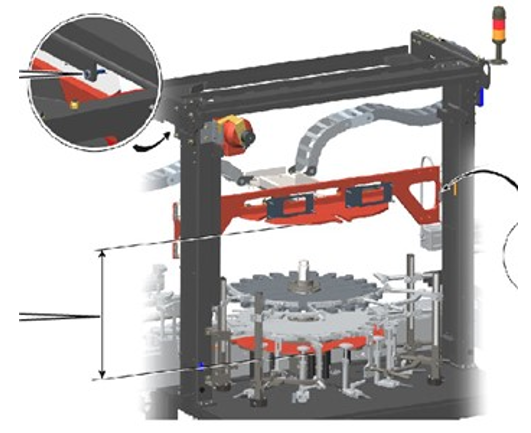
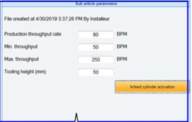
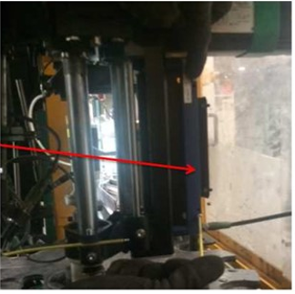
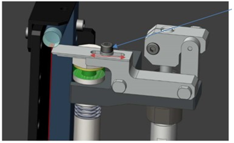
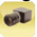
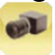

General Setup - Tiama - PLUG V5
INS-03-099
Revised: 2021-09-30
Purpose and Application
Purpose
To define a work instruction for proper setup of the PLUG V5 inspection device on MX4 Machines.
Application
This work instruction applies to all O-I manufacturing facilities.
Safety
Observe O-I standard safety requirements and procedures defined by the Global Environmental Health & Safety (EH&S) organization, as well as all applicable local, regional, and national requirements. Safety equipment and instructions specific to the completion of this work instruction are detailed in the Instructions Section.
Instructions
-
Before starting the work instruction activity, perform the following steps:
- Do not begin these tasks without confirmation that personnel directly involved have completed the required training associated with the work instruction activity and have reviewed this document.
- Gather necessary tools and equipment as identified below in the Equipment Section.
- Wear and use additional Personal Protective Equipment (PPE) and safety equipment required for this specific work instruction.
- Obey all applicable safety requirements and procedures.
- Notify appropriate personnel of the activity and estimated time needed to complete the tasks.
- Clearly identify, mark-off, and secure the designated area defined by the work instruction activity.
- Follow all Lockout/Tagout procedures when work instruction activity requires isolating energy in the designated area. Verify energy is isolated before starting work.
- After verifying that energy is isolated, remove the protective guarding and open the safety interlock gates.
-
Prerequisites:
- Obtain a sample container with a known height and inner diameter value measured and approved by the quality team.
-
To set up the PLUG V5 inspection, perform the following steps:
-
Preliminary Checks Verify the correct calibration of the motor –
driven movable frame.
- Move the movable frame upwards.
- Enter the values of the container dimensions (diameter, height).
- Move the movable frame downwards.
- Use a measuring ruler to check that the height value matches the height parameter entered.


-
Check the length of the Plug Caliber against the parameter value
entered.
- Go to the Article menu
 ,
Handling
,
Handling
 ,
Tooling height.
,
Tooling height.


- Go to the Article menu
-
The internal PLUG caliber should be barely out of the external caliber.
- The distance between the article and the extractor pipe should be approximately 5mm.
- If this distance is not correct, verify the height at the Article file menu.

-
Adjust the PLUG Location Adjust the radial PLUG position.
- Unlock the locking lever [1].
- Move the PLUG head radially to center it with the center of the article’s finish.
- Lock the locking lever [1].

-
Adjust the centering of the PLUG.
- Unlock the locking lever [1].
- Lose the centering screw [2] using a 13mm spanner.
- Lock the locking lever [1].

-
Check the verticality of the PLUG when all handles are locked.
- If the verticality is not correct, use the 4 screws around the cylinder block to correct.

-
Sensitivity Adjustment To obtain proper inspection, there must be a
3mm pressure on the article to make the measurement.
- Put a 3mm key on the external system to simulate the 3mm pressure on the article.

-
Unlock the optical barrier at the back. The goal is to put the optical
barrier at the limit of the sensor activation.
- To do this, you must check the light of the optical barrier.
- When it is done, check the non-activation of the barrier when you manually put the shuttle up and down without the 3mm key.


-
Sensitivity of internal diameter’s sensor Simulate the 3mm pressure on
the article. The goal is to be at the limit of the optical barrier’s sensor
activation.
- Manually run the machine to get the internal gauge 3mm out of its metallic ejector.
- Press the internal gauge to simulate the 3mm pressure.
- Check the light of the top optical sensor. If the limit sensor does not activate, it must be adjusted.


-
External Gauge Adjustment In Manual mode:
- Go to Configuration
 ,
Detector Presence
.
,
Detector Presence
. - Select the PLUG symbol under the station where it is installed.
- The value for the Plug wedge must be around 155.

- Go to Configuration
-
Click on the Detections/PLUG button to display the PLUG Setup
screen.
- Activate or deactivate the corresponding internal and external inspections (Green = activated, gray = deactivated).

-
Adjust the height threshold values.
- The external peak indicates the moment when the external caliber makes contact with the container.

-
If the difference between the measured and real height is more than
1mm:
- Slowly move down the external caliber until the optical barrier is activated (LED [1] will turn off).
- Unlock the nut [2] located on the internal axes.
- Untighten or loosen the nut [3] to have more or less compression on the internal caliber.
- Find the correct position to turn off the LED [4] of the optical internal barrier.
- Lock the system using the nut [2].
- Verify the new measured value.


-
Adjust the height threshold values.
- The internal peak indicates the moment when the external caliber makes contact with the container.
- When passing a good article, both internal and external peaks should be aligned as shown.

-
Tests Switch the machine to Production mode.

-
Preliminary Checks Verify the correct calibration of the motor –
driven movable frame.
-
Upon completion of tasks, perform the following steps:
- Replace protective guarding and close safety interlock gates.
- Confirm the designated work area is clear and communicate to personnel the intent to restart energy.
- After the designated work area is confirmed clear and personnel are aware of the pending restart, follow all Lockout/Tagout procedures to restart energy supplied to the designated area. Verify energy is active.
- Remove signs and markings from the designated work area.
- Perform basic housekeeping duties. Clean up the work space, tools and equipment, dispose of trash, put tools and equipment in assigned area.
- Notify appropriate personnel that the work instruction activity has been completed.
Required Training
Before performing this work instruction, applicable personnel must be trained by an authorized trainer on the required training contents listed in this document.
Equipment
Allen wrench set
Wrench set
Screwdriver set
References
Document Classification
- Efficiency and Throughput
- Quality
Fundamentals
- INS-306
Approval
|
Region |
Representative |
|---|---|
|
Europe |
Robert Kurpiel, Bruno Laumier, Stefano Lucidi, Hans de Willigen |
|
Latin America |
Juan Franco |
|
Mexico |
Yigael Hernandez |
|
North America |
David Gladwin |
|
Global Operations |
Bob Morin |
Revision History
| 2021-09-30 |
Approved by Bob Morin, Global Inspection Network Leader |
|
Original Issue |